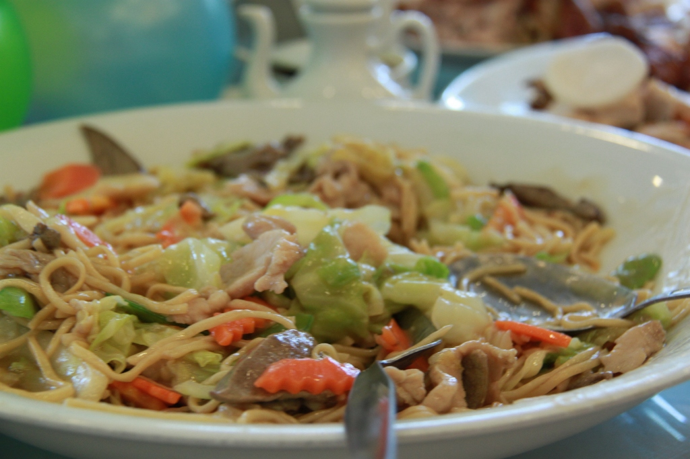

Pancit Canton

Pancit Canton is a Filipino Dish
This Pancit Canton Recipe makes use of sliced pork, sausage, and shrimp. It also utilizes different kinds of vegetables.
Have you tried cooking pancit canton? If not, that's okay. You will be all set as long as you follow the directions step by step.
- 250 grams flour stick noodles
- 4 ounces pork thinly sliced
- 1 piece Chinese sausage sliced
- 1 piece onion sliced
- 1 teaspoon garlic minced
- 8 to 10 pieces shrimp shell removed
- 10 to 12 pieces snap peas
- 3/4 cup carrot julienne
- 1 piece cabbage small, chopped
- 1 1/2 cups chicken broth
- 1 tablespoon oyster sauce optional
- 3 tablespoons soy sauce
- 3/4 cup water
- 1/2 cup flat leaf parsley chopped
- 3 tablespoons cooking oil
- Salt and pepper to taste
- Place 2 cups of ice and 3 cups water in a large bowl. Set aside.
- Boil 6 cups of water in a cooking pot.
- Once the water starts to boil, blanch the snap peas, carrots, and cabbage for 35 to 50 seconds. Quickly remove the vegetables and immerse in bowl with ice cold water. Drain the water after 2 minutes and set aside.
- Heat a large wok or cooking pot and pour-in the cooking oil.
- Saute the onion and garlic.
- Add the pork and sausage slices and continue to cook for 2 minutes.
- Add-in soy sauce and oyster sauce. Stir.
- Pour-in chicken broth and water. Add salt and pepper. Let boil. continue to cook for 5 to 10 minutes.
- Put-in the shrimp and parsley. Cook for 3 minutes. Add more water if needed.
- Put-in the flour noodles. Gently toss until the noodles absorb the liquid.
- Add-in the blanched vegetables. Toss and cook for 1 to 2 minutes.
- Transfer to a serving plate. Serve.
- Share and enjoy!
Homepage